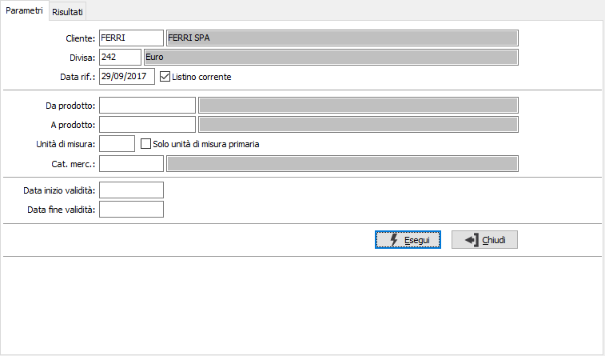
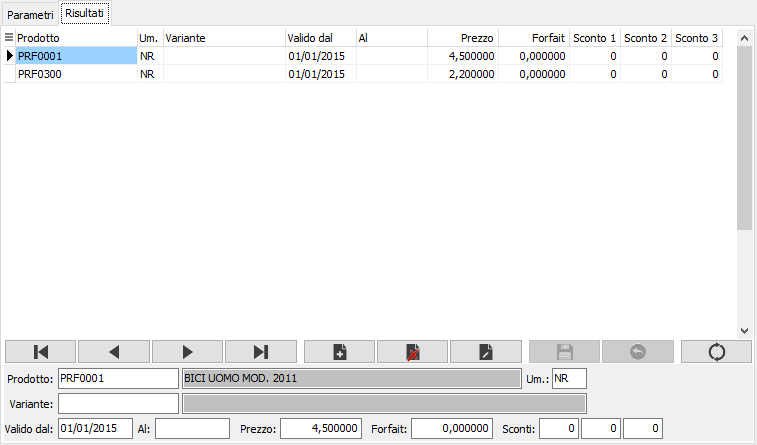
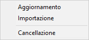
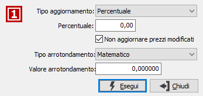
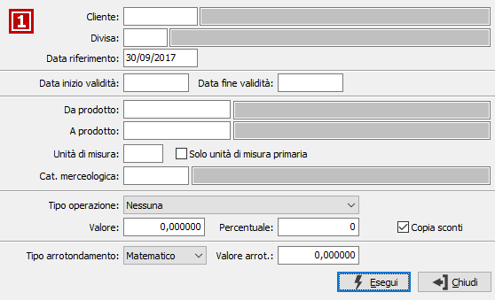

Manutenzione listini prezzi clienti
Per ogni cliente è possibile creare un listino prezzi delle lavorazioni (che in base alla configurazione del conto lavoro attivo può essere gestito per scaglioni di quantità oppure no); in fase di creazione dell’ordine sulla riga verrà riportato tale prezzo.
La manutenzione si struttura in due finestre (linguette), una prima che si utilizza per l'indicazione del cliente e la selezione, secondo criteri specifici, dei prodotti da inserire o modificare; una seconda finestra per la vera e propria definizione della validità e manutenzione dei prezzi del listino stesso.
Selezione

CLIENTE: indica il codice del cliente per cui si vuole effettuare la manutenzione dei prezzi. L'inserimento del campo è obbligatorio. Sul campo sono attive le funzioni di ricerca (F9).
DIVISA: indica il codice della divisa per cui si vuole effettuare la manutenzione dei prezzi. L'inserimento del campo è obbligatorio. Sul campo sono attive le funzioni di ricerca (F9).
DATA RIFERIMENTO: definisce la data, tramite cui ricercare i prezzi per il cliente e la divisa inseriti in precedenza. Saranno disponibili per la manutenzione solo i prodotti le cui date di validità comprendono, come periodo, la data di riferimento.
LISTINO CORRENTE: indica di utilizzare il listino corrente, quello valido alla data di sistema (casella con segno di spunta).
DA PRODOTTO: eventuale codice dell'articolo, presente in anagrafica Prodotti, da cui si desidera iniziare la selezione. Confermando a vuoto, la selezione inizia con il primo prodotto valido. Sul campo sono attive le funzioni di ricerca (F9).
A PRODOTTO: eventuale codice dell'articolo, presente in anagrafica Prodotti, con cui si desidera terminare la selezione. Confermando a vuoto, la selezione termina con l’ultimo valido. Sul campo sono attive le funzioni di ricerca (F9).
UNITà di misura: codice relativo alla tabella unità di misura da utilizzare come filtro per la selezione dei prezzi del listino; questo parametro è alternativo a "Solo unità di misura primaria". Sul campo sono attive le funzioni di ricerca (F9).
Solo unità di misura primaria: se spuntato sarà applicato un filtro sulla selezione dei prodotti nel listino per includere solo i prodotti nella loro unità di misure primaria; questo parametro è alternativo a "Unità di misura".
CATEGORIA MERCEOLOGICA: eventuale codice della categoria merceologica, riferita ai prodotti, per cui effettuare la selezione. Sul campo sono attive le funzioni di ricerca (F9).
DATA INIZIO VALIDITÀ: definisce la data di inizio validità da inserire sui prodotti aggiunti al listino.
DATA FINE VALIDITÀ: definisce la data di fine validità da inserire in automatico sui prodotti aggiunti al listino.
Manutenzione
In questa sezione è possibile effettuare la manutenzione dei dati selezionati; inserire manualmente nuovi prodotti, o prodotti già presenti in altre unità di misure (sempre compatibili col prodotto stesso), variare il prezzo di prodotti esistenti e cancellarli.

PRODOTTO: codice dell'articolo, presente in anagrafica Prodotti, a cui assegnare il prezzo del listino. Sul campo sono attive le funzioni di ricerca (F9).
unità di misura: codice dell'unità di misura, relativa a quelle previste per il prodotto, a cui fa riferimento il prezzo del listino. Sul campo sono attive le funzioni di ricerca (F9).
SCAGLIONE Quantità: se attiva in configurazione del conto lavoro attivo la gestione delle fasce di quantità, sarà possibile inserire la quantità massima raggiungibile per lo scaglione; se superiore sarà considerato lo scaglione successivo..
DATA INIZIO VALIDITÀ: definisce la data di inizio validità del prezzo per il prodotto, campo obbligatorio, non modificabile.
DATA FINE VALIDITÀ: definisce la data di fine validità del prezzo per il prodotto. Se non specificata s'intende sempre valido a partire dalla data inizio validità; il campo non è modificabile.
PREZZO: prezzo relativo al prodotto nell'unità di misura e nelle date di validità indicate.
COSTO FORFETTARIO: prezzo relativo alla lavorazione del prodotto da applicare sul documento, senza considerarne la quantità e l'unità di misura, nelle date di validità indicate.
SCONTI O MAGGIORAZIONI: campi, abilitati o meno in relazione al numero sconti previsto in configurazione, per inserire una percentuale di sconto o maggiorazione relativa al prodotto nelle date di validità indicate.
In questa fase, premendo il tasto destro del mouse

compare un menù che consente di effettuare delle azioni riguardanti il listino attualmente in manutenzione. Tramite il menù è possibile aggiornare i prezzi dei prodotti, aggiungere nuovi prodotti oppure eliminare completamente il listino; in quest'ultimo caso, dopo la richiesta di conferma per l'eliminazione del listino, viene richiesto se effettuare il salvataggio definitivo (come se fosse stato premuto il pulsante Salva nella toolbar).
Aggiornamento prodotti

La finestra di Aggiornamento richiede se effettuare un aggiornamento in percentuale oppure a valore, la relativa percentuale o valore e l'arrotondamento da applicare per aggiornare i prezzi. Il check box 'Non aggiornare prezzi modificati' definisce se l'aggiornamento deve riguardare anche i prodotti per cui è stato già modificato manualmente il prezzo.
Generazione listini
La finestra di generazione listini consente di inserire nel listino attualmente visualizzato prodotti presi da altri listini.

CLIENTE: indica il codice del cliente da cui effettuare la generazione. Sul campo sono attive le funzioni di ricerca (F9).
DIVISA: indica il codice della divisa da cui si vuole effettuare la generazione, per il cliente richiesto. Sul campo sono attive le funzioni di ricerca (F9).
DATA RIFERIMENTO: definisce la data, tramite cui ricercare i prezzi all'interno dell'eventuale listino di base. Saranno elaborati solo i prodotti le cui date di validità comprendono, come periodo, la data di riferimento.
VALIDITÀ DAL: definisce la data di inizio validità da inserire sui prodotti aggiunti al listino.
VALIDITÀ AL: definisce la data di fine validità da inserire in automatico sui prodotti aggiunti al listino.
DA PRODOTTO: eventuale codice dell'articolo, presente in anagrafica Prodotti, da cui si desidera iniziare la selezione. Confermando a vuoto, la selezione inizia con il primo prodotto valido. Sul campo sono attive le funzioni di ricerca (F9).
A PRODOTTO: eventuale codice dell'articolo, presente in anagrafica Prodotti, con cui si desidera terminare la selezione. Confermando a vuoto, la selezione termina con l’ultimo valido. Sul campo sono attive le funzioni di ricerca (F9).
UNITà di misura: codice relativo alla tabella unità di misura da utilizzare come filtro per la selezione dei prezzi del listino di origine; questo parametro è alternativo a "Solo unità di misura primaria". Sul campo sono attive le funzioni di ricerca (F9).
Solo unità di misura primaria: se spuntato sarà applicato un filtro sulla selezione dei prodotti nel listino di origine per includere solo i prodotti nella loro unità di misure primaria; questo parametro è alternativo a "Unità di misura".
CATEGORIA MERCEOLOGICA: eventuale codice della categoria merceologica, riferita ai prodotti, per cui effettuare la selezione. Sul campo sono attive le funzioni di ricerca (F9).
TIPO OPERAZIONE: definisce un'eventuale operazione da compiere sul prezzo del prodotto; valori possibili: nessuna, divisione per valore costante, moltiplicazione per valore costante, percentuale di incremento/decremento, valore assoluto.
VALORE: indica il valore con cui effettuare l'operazione richiesta; è alternativo alla percentuale.
PERCENTUALE: indica la percentuale con cui effettuare l'operazione richiesta; è alternativa al valore.
COPIA SCONTI: definisce se copiare anche gli sconti (casella con segno di spunta) oppure no (casella vuota).
TIPO ARROTONDAMENTO: definisce il metodo di arrotondamento per il calcolo del prezzo: matematico, per eccesso o per difetto.
VALORE ARROTONDAMENTO: definisce il valore da utilizzare per effettuare l'arrotondamento dei prezzi.